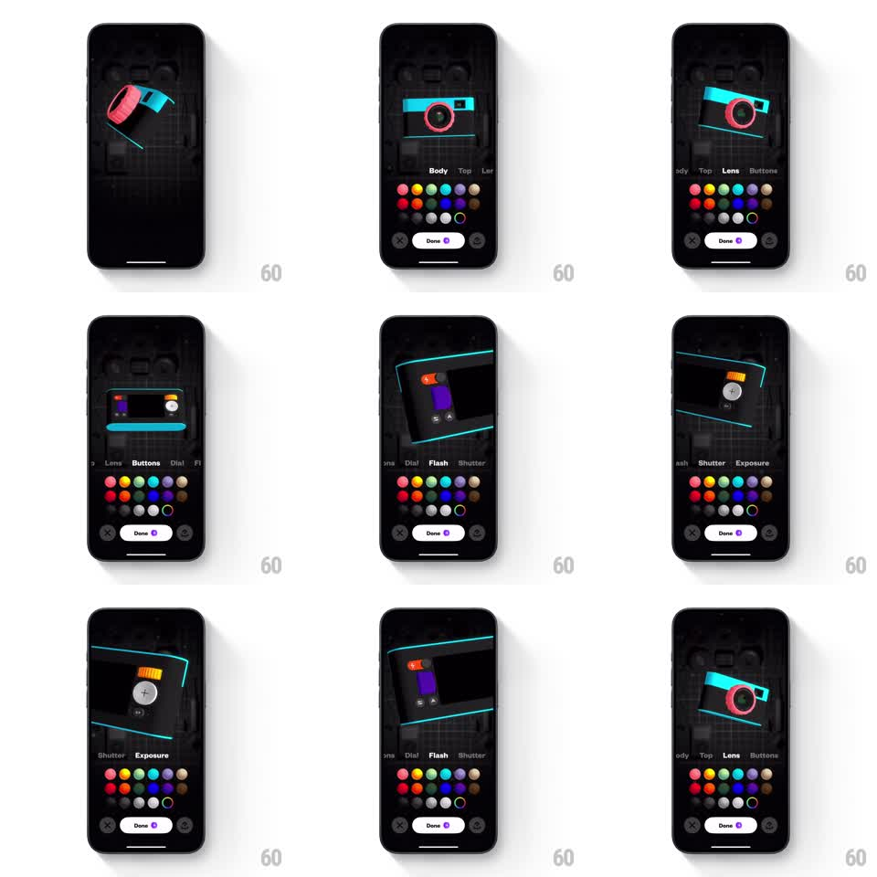

Media
Frame-by-frame

Rebuild this interaction 1:1: Not Boring Camera's customize tabs - swiping through the part tab row pans, rotates, and zooms the 3D camera model to spotlight each component while the color-dot grid stays docked.

Rebuild this interaction 1:1: Not Boring Camera's customize tabs - swiping through the part tab row pans, rotates, and zooms the 3D camera model to spotlight each component while the color-dot grid stays docked. ## Integration Integration: stack-agnostic spec - springs given as stiffness/damping, timed motions as duration + curve; map every value to your framework and animation library of choice. ## Scene Dark customize screen: a skeuomorphic 3D camera model (teal body, pink lens ring) floats over a faint blueprint backdrop, a part tab strip below it (Body, Top, Lens, Buttons, Dial, Flash, Shutter, Exposure), a grid of color dots beneath that, and a "Done" pill with a change counter between two corner buttons. ## Motion spec Pattern: swipeable part tabs driving 3D model focus moves. - The tab strip scrolls horizontally with the active tab centered (spring ~300/22); swiping it flings with momentum and snaps to the nearest tab. - Each tab switch reframes the model: it pans, rotates, and zooms (spring ~280/20, 500ms) to a stored pose per part - Lens faces the pink ring front-on, Flash rotates the model down to its top plate, Shutter and Exposure zoom into the top dial cluster (+- symbols visible). - The reframed part highlights (full material) while other parts dim 35% (200ms). - Swiping the model itself also scrubs between tab poses 1:1, then settles onto the nearest tab (the tab strip follows, spring ~300/22). - Tapping a color dot recolors the focused part (color tween 200ms) with a dot pop (scale 1 -> 1.3 -> 1, spring ~340/14). - The Done counter badge pops (spring ~340/14) whenever a recolor lands. ## Calibration - Model poses are consistent anchors: the same tab always lands the model at the same rotation, scale, and screen position. - Momentum swipes through multiple tabs interpolate through intermediate poses without teleporting. ## Reduced motion Tab switches crossfade the model between poses (250ms); no spin. ## Don't miss - The blueprint backdrop and dot grid never move - only the model reframes. - Keep the pink lens ring and teal body as the model's default identity until recolored.